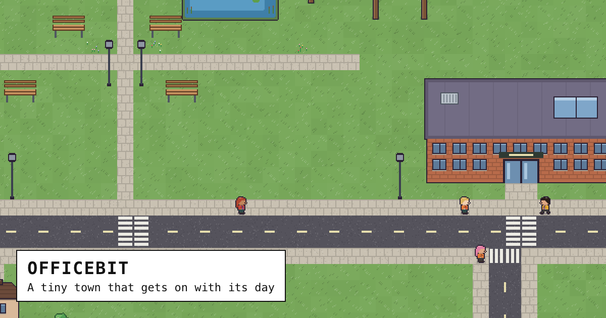

A tiny town that gets on with its day.
officebit is an 8-bit town where people commute, work, chat over coffee, fall in love and start companies, all on their own. It runs in your browser, and it carries on while you're away.

Everyone has a mind of their own
Each person has a personality (how sociable, diligent, chaotic, charismatic and ambitious they are) and needs that run down through the day: energy, hunger, company and fun. Whenever they finish something, they weigh up everything they could do next and pick whatever suits them best. Nobody's scripted. Move the coffee machine and the office really does behave differently.
What goes on
- Work, and interruptions. Some knuckle down; some can't resist a chat at someone's desk, and it doesn't make them friends.
- Lunch. Food trucks pull up on the green; the 24-hour diner never quite sleeps.
- Friendships and falling out. People who get on seek each other out; people who don't, walk off.
- Love. Sparks, dates at the diner, and moving in together.
- Side projects. The ambitious hustle in the evenings, pitch their friends, and launch startups whose offices a crew builds on an empty lot.
- Visitors. Cars turn off the highway to stop for a bite or charge up, and the driver pops into town.
- Everyday life. Children at school, pets at home, the food shop, queues when it's late opening, fire drills and free pizza.
It carries on without you
Your town follows your clock. Close the tab, come back tomorrow, and it has lived the day in between: who got together, who fell out, what got built. Every browser gets a story of its own, and you can always start afresh, or jump ahead to see what happens next.
Make it yours
Move the furniture, lay roads and paths, move houses and turn them round, and share your town with anyone as a single link. Or take control of someone and steer their day.
Open source, and plain
officebit is free and MIT-licensed: plain TypeScript in the browser, no framework, no build step to speak of. People can even be driven by outside data, like a Slack status. Read the code on GitHub.